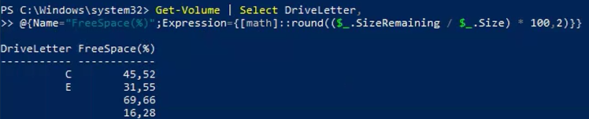

Tutorial – File Server Health Check
This check verifies the available disk space percentage on the File Server.
Low disk space can impact:
Open PowerShell on the File Server and run:
Get-Volume | Select DriveLetter, @{Name="FreeSpace(%)";Expression={[math]::round(($_.SizeRemaining / $_.Size) * 100,2)}}
Verify the remaining free space percentage for each volume.
Pay particular attention to:
